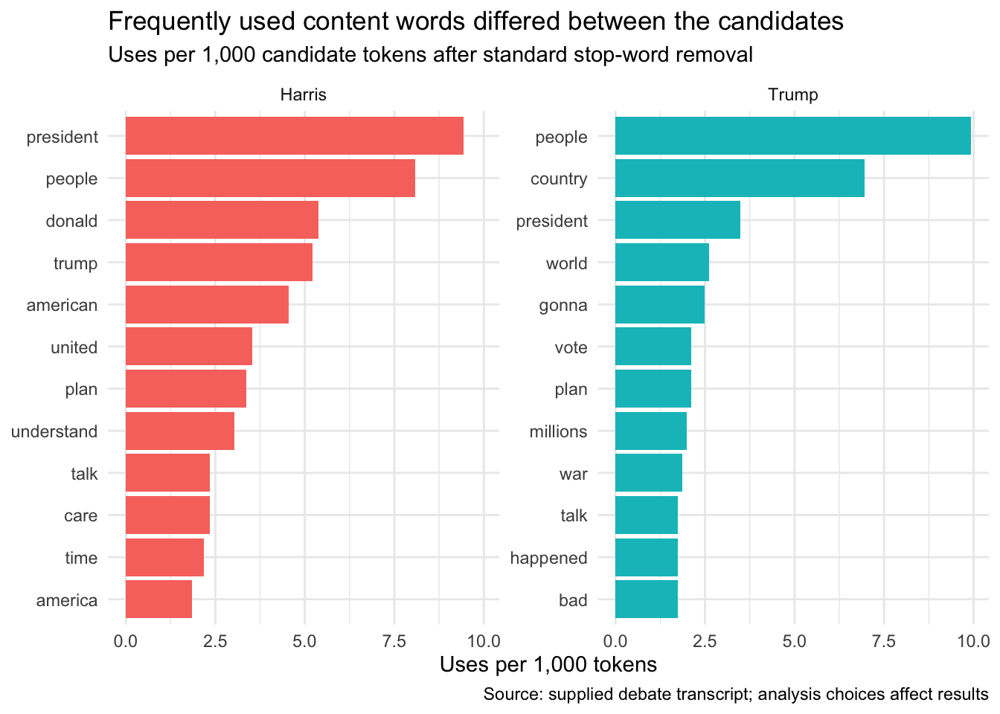

library(tidyverse)
library(tidytext)
transcript_lines <- read_lines("data/debate.txt") |>
discard(~ str_trim(.x) == "")16 Text as Data: The 2024 US Presidential Debate
16.1 Learning objectives
By the end of this case, you should be able to:
- parse a transcript into speaker turns;
- tokenize text while preserving the speaker;
- compare word use with a rate rather than raw counts alone;
- inspect words in their original context; and
- identify interpretive limits of frequency analysis.
16.2 Import and parse the transcript
The transcript marks a new speaker with capital letters followed by a colon. The parser below combines wrapped lines into one record per speaker turn.
parse_transcript <- function(lines) {
speaker_pattern <- "^[A-Z][A-Z ]+:"
turns <- list()
current_speaker <- NA_character_
current_text <- character()
save_turn <- function(speaker, text_parts) {
tibble(
speaker = speaker,
text = str_squish(str_c(text_parts, collapse = " "))
)
}
for (line in lines) {
if (str_detect(line, speaker_pattern)) {
if (!is.na(current_speaker)) {
turns[[length(turns) + 1]] <- save_turn(
current_speaker,
current_text
)
}
pieces <- str_split_fixed(line, ":", 2)
current_speaker <- str_trim(pieces[, 1])
current_text <- str_trim(pieces[, 2])
} else {
current_text <- c(current_text, str_trim(line))
}
}
if (!is.na(current_speaker)) {
turns[[length(turns) + 1]] <- save_turn(
current_speaker,
current_text
)
}
bind_rows(turns)
}
turns <- parse_transcript(transcript_lines)
turns |>
count(speaker, sort = TRUE)Inspect this table before filtering. Unexpected speaker labels can reveal a formatting problem or a false match in the regular expression.
candidate_turns <- turns |>
filter(speaker %in% c("HARRIS", "TRUMP")) |>
mutate(speaker = recode(speaker, HARRIS = "Harris", TRUMP = "Trump"))
stopifnot(setequal(unique(candidate_turns$speaker), c("Harris", "Trump")))One row now represents one candidate speaking turn.
16.3 Tokenize and keep denominators
all_tokens <- candidate_turns |>
unnest_tokens(word, text) |>
filter(!str_detect(word, "^[0-9]+$"))
token_totals <- all_tokens |>
count(speaker, name = "all_tokens")
token_totalsThe candidates produced different numbers of tokens. A raw frequency can be higher simply because one person spoke more. Keep the denominator before removing stop words.
data("stop_words")
content_tokens <- all_tokens |>
anti_join(stop_words, by = "word")
word_rates <- content_tokens |>
count(speaker, word, name = "uses") |>
left_join(
token_totals,
by = "speaker",
relationship = "many-to-one"
) |>
mutate(uses_per_1000_tokens = uses / all_tokens * 1000)Stop-word removal is an editorial and linguistic choice. Negations such as “not” can matter greatly in political speech, and a generic English stop-word list may remove them. Inspect the list and document any changes.
16.4 Compare the most frequent content words
top_words <- word_rates |>
group_by(speaker) |>
slice_max(
uses_per_1000_tokens,
n = 12,
with_ties = FALSE
) |>
ungroup()
top_wordstop_words |>
mutate(word = reorder_within(word, uses_per_1000_tokens, speaker)) |>
ggplot(aes(x = uses_per_1000_tokens, y = word, fill = speaker)) +
geom_col(show.legend = FALSE) +
facet_wrap(~ speaker, scales = "free_y") +
scale_y_reordered() +
labs(
title = "Frequently used content words differed between the candidates",
subtitle = "Uses per 1,000 candidate tokens after standard stop-word removal",
x = "Uses per 1,000 tokens",
y = NULL,
caption = "Source: supplied debate transcript; analysis choices affect results"
) +
theme_minimal()
Rate normalization improves comparability but does not measure importance, sincerity, policy attention, or audience effect.
16.5 Bigrams preserve a little context
bigrams <- candidate_turns |>
unnest_tokens(bigram, text, token = "ngrams", n = 2) |>
separate_wider_delim(
bigram,
delim = " ",
names = c("word_1", "word_2"),
too_few = "align_start"
) |>
filter(
!word_1 %in% stop_words$word,
!word_2 %in% stop_words$word,
!is.na(word_2)
) |>
unite(bigram, word_1, word_2, sep = " ") |>
count(speaker, bigram, sort = TRUE)
bigrams |>
group_by(speaker) |>
slice_max(n, n = 10, with_ties = FALSE) |>
ungroup()Bigrams retain adjacent words but still lose sentence meaning, sarcasm, questions, quotation, and who or what a pronoun refers to.
16.6 Return to the transcript
Any word that becomes part of a story must be checked in context:
candidate_turns |>
filter(str_detect(str_to_lower(text), "immigration")) |>
select(speaker, text)Read several examples, not just the most convenient one. Check whether the candidate is stating a position, responding to a moderator, quoting an opponent, or denying a claim.
16.7 Claim limits
Word frequency can support a sentence such as “the word appeared at a higher rate in Candidate A’s transcript.” It does not by itself support:
- “Candidate A cared more about the issue”;
- “the issue dominated the debate” without a coding rule;
- “Candidate A was more truthful”;
- sentiment or intent inferred from an isolated token; or
- audience impact.
Transcript accuracy, moderation, speaking time, interruptions, tokenization, and stop-word choices all affect the result.
16.8 Independent task
Choose one topic and create a small, transparent dictionary of related terms. Then:
- calculate topic-term uses per 1,000 tokens by candidate;
- inspect at least five turns in context for each candidate;
- record one false positive and one missed expression;
- revise the dictionary once; and
- write a 200-word methods note that distinguishes automated counts from your qualitative interpretation.